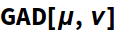
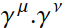
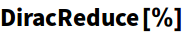
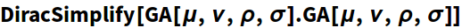
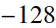
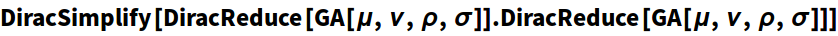
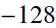
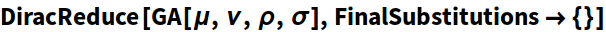
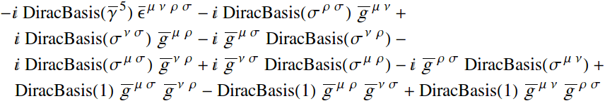

FEYN CALC SYMBOL
DiracReduce
DiracReduce[exp]
reduces all 4-dimensional Dirac matrices in exp to the standard basis (S,P,V,A,T) using the Chisholm identity.
Examplesopen all
Basic Examples (5)
| In[1]:= |

|
| Out[1]= |

|
| In[2]:= |

|
| Out[2]= |
| In[3]:= |

|
| Out[3]= |

|
| In[4]:= |

|
| Out[4]= |

|
| In[1]:= |

|
| Out[1]= |

|